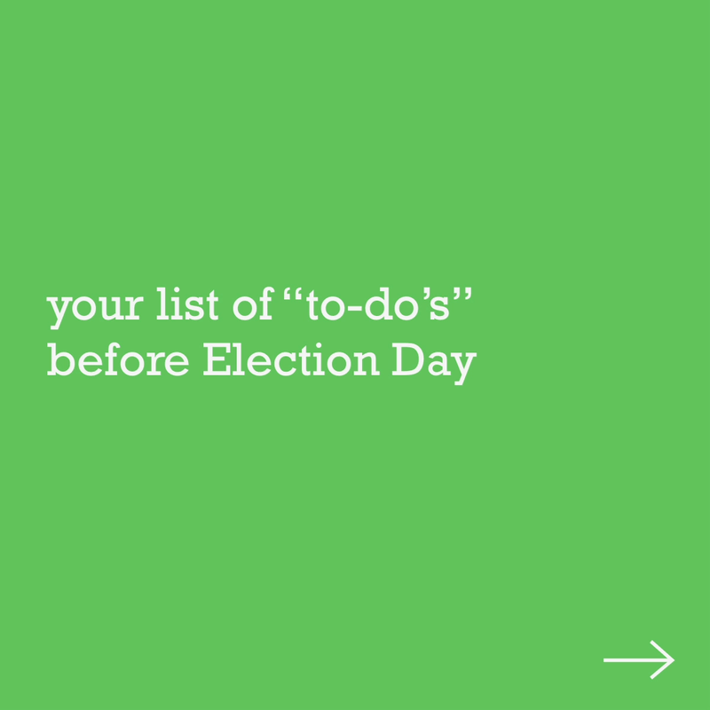
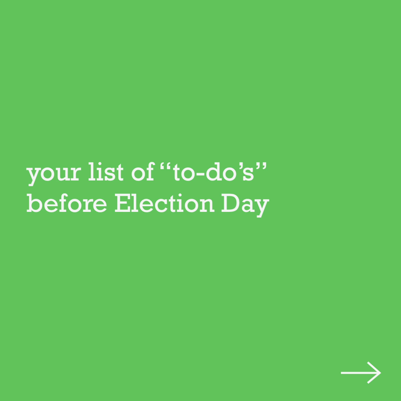
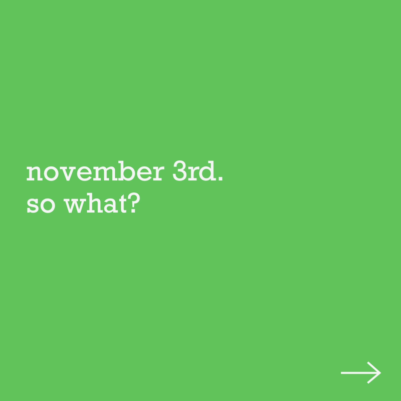
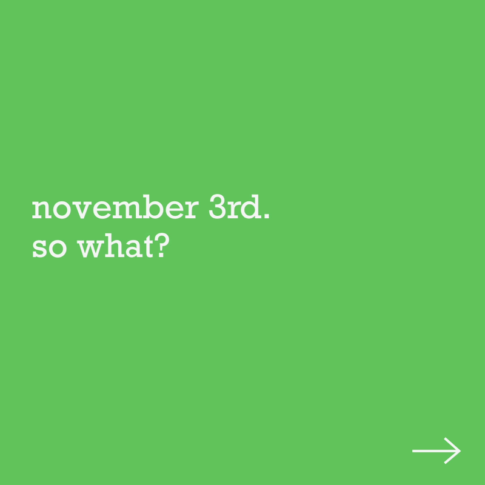
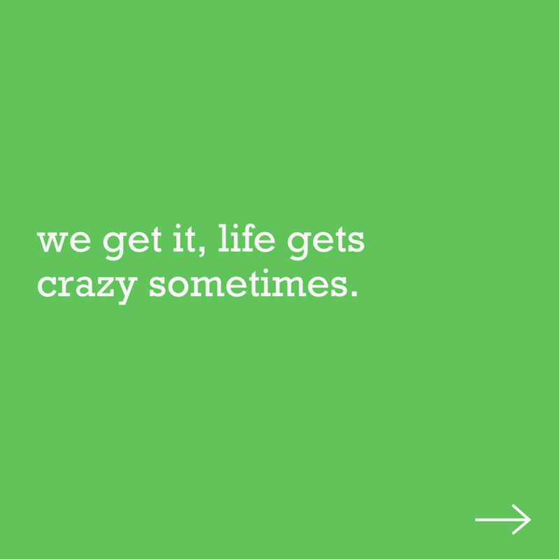
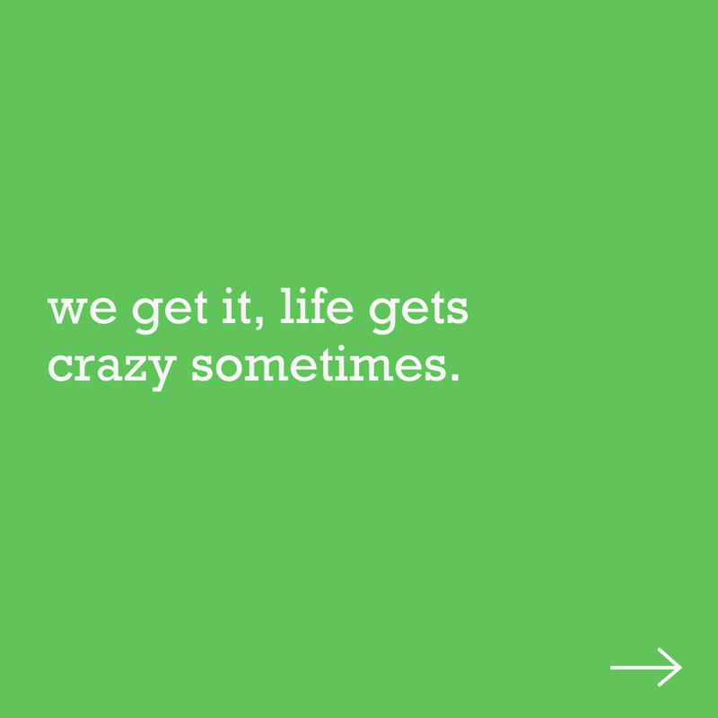
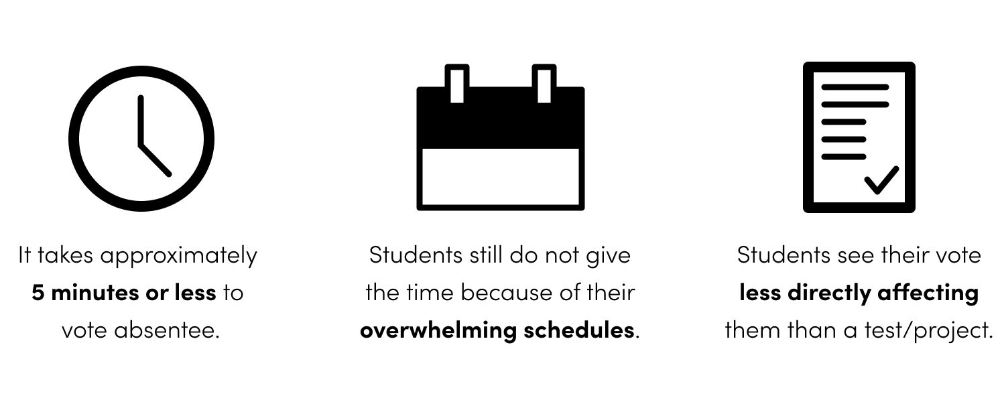
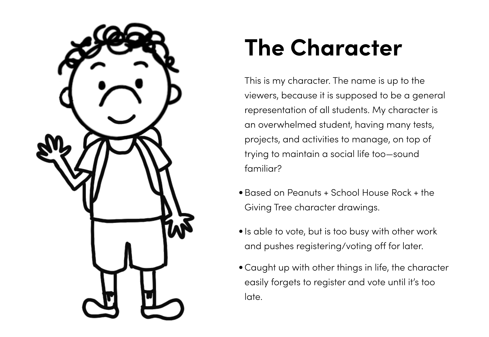

caroline song :-)
communications designer @ carnegie mellon

Fall 2020, 6 weeks
45.5 percent of young students claim they are too busy to vote.
We are the largest generation in America and despite that, the least likely to vote. Partnering with studentvote.org, my goal was to create a visual campaign that would incentivize and empower these young students who state they are “too busy”, to vote in the upcoming election.
I created a campaign that draws from feelings of warmth and nostalgia with motion graphics and illustrations. To differentiate my voting campaign from others, I decided to approach this project in a lighthearted, unintimidating manner—complete with cartoon characters! In juxtaposing tones, I also focused on addressing the importance and seriousness of the message: We all must do our civic responsibility because there is absolutely no one who is too busy to vote.
Check out my unfiltered process thoughts here →
Adobe After Effects
Adobe Photoshop
Figma
Procreate
Stop Motion
Illustration
Brand Identity
User Research
Individual
Animation PSA –
In this 53 second animation, I address how all students can easily get overwhelmed by all the things on their plate—it's understandable. But come November 7th, nothing is more important than voting and that should be the primary task in hand.
Social Media Campaign –
To take advantage of my target audience's heavy usage of social media platforms, I expanded my branding to create this campaign. The main message of these designs remain the same, using moments from the video and also bringing in more factual, educational aspects for viewers to scroll through as well.
 



 

 


Social Media Posts
Social Media Posts

Instagram + Facebook Mockup
Merchandise –
Through creating some sample merchandise, I thought about what items my target audience uses and enjoys the most. Through my merchandise, I wanted to remain playful and relatable, which are characteristics that I feel that young students gravitate towards the most.

01 Research –
I started to research the main reasons why students choose not to vote, using poll results from previous elections as a starting point.
The reason/statistic that struck me the most was that 45.5 percent of young voters say they are too busy to vote (according to the Voting Registration and Supplement Data). It makes up of almost half the population of eligible young voters. It struck me personally because I know I have used this excuse in the past.
Now how long does it take to actually vote? With most people choosing to use mail-in ballots this year, I researched the approximate time it would take for one to vote and came to three conclusions.

02 Concept –
How can I motivate students who believe they do not have the time to vote?
Many voting PSA’s I came across used the same format to tell the same story in the same way. They were serious, emotional, with dark colors. They were predictable, which is something I found ineffective in the long run. I primarily used three ways to keep users engaged:
Juxtaposition: Contrast the serious topic with a light, welcoming atmosphere for viewers to be drawn in— then tying it all together at the end to remind them of the subject’s importance.
Relatability: This character represents all students. The video is meant to come from a place of how we understand how overwhelmed you all are so to not attack viewers with guilt. Regardless, this is still no excuse for not voting!
Nostalgia: More powerful than you think it is! Instead of drawing from fear, sadness, or anger, I wanted to show that there are other effective ways to persuade beside those emotions. I chose to focus on feelings of warmth and nostalgia.
03 Visual Development –
To further capsulate feelings of nostalgia, I drew my animation style heavily from old cartoons and books that I would watch and read as a child that I still love to this day.

I finally got to create my little cartoon character, the star of the show! Not much is known about them, just that they are a representation of every student there was/is/will be. My character will be the instrumental piece to bringing my PSA to life in the way I intend, as the character's actions will be what viewers will be holding onto.

04 Storyboarding –
I wanted to achieve my animation through stop-motion. In order for this to be successful and as painless as possible, I wanted to nail down my exact storyboard frame by frame. I started this process by first outlining my general story arc to include a beginning, a climax, and resolution, followed by my final call to action.

Next, I went from iteration to iteration of storyboards, fleshing out the finer details of my storyline. I used simple paper sketches in order to brainstorm and finalize my idea.


Through my iteration process, some thoughts I took away:
Balance: Finding the balance between line and completely rendered drawings. How much detail and information is necessary for believability yet keeping with the simplicity?
Context: Context is important! Hints of the environment around the character will allow for audience to come to conclusions on their own.
Time: Be conscious of how much time each action takes up on the screen. Is it necessary? Should it be shorter or longer?
05 Branding –
To expand my compaign further, I designed these guidelines to use throughout my creation of social media + merchandise assets.

Final Thoughts –
I learned what an integral part storyboarding plays in the animation process. It allowed me to think through the entire storyline, laying each scene out in such a way that let me consider every factor and how it plays into the final animation. And thinking about the stop-motion style I chose to pursue, I was able to finalize my entire detailed story so to draw and animate as efficiently as possible.
Expanding to think of my entire branding system, I learned how to make design decisions as to what elements to bring over in order to keep the cohesiveness in each item in my visual system, while keeping each element interesting, exciting, and a little bit new for the audience.